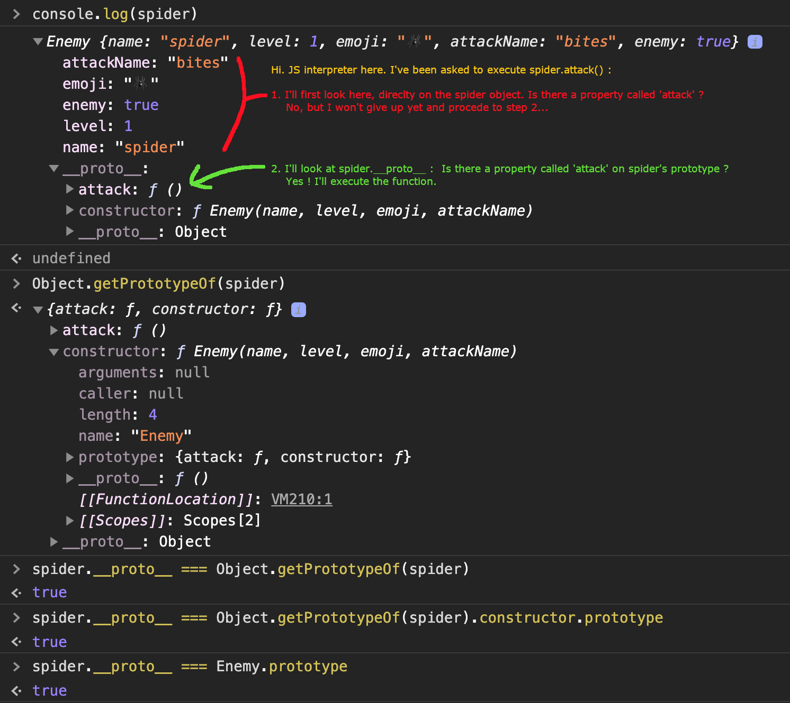

👩🏫 JS Intermédiaire 05bis - Programmation Orientée Objet - Prototype
⚠️ Avant de démarrer cette quête, nous te conseillons de compléter d'abord celle-ci :
Introduction
Bien que le mot-clé class soit disponible depuis la version ES6 de JavaScript, cela n'a pas toujours été le cas, et pourtant la POO était déjà possible. En effet, le mot-clé class n'est que du sucre syntaxique qui "cache" des mécanismes sous-jacents.
Javascript est souvent décrit comme un langage basé sur des prototypes. Nous allons voir pourquoi dans quelques instants.
Si tu veux avoir une compréhension plus profonde du fonctionnement de JavaScript, cette quête est pour toi !
🤓 A la fin de cette quête, tu seras capable :
✅ Comprendre la notion de prototype ✅ Comprendre la notion d'héritage prototypique
💫 Les prototypes
Partons de cet exemple :
function Enemy(name, level, emoji, attackName) {
this.name = name;
this.level = level;
this.emoji = emoji;
this.attackName = attackName;
this.attack = function () {
return `${this.name} ${this.attackName} you!`;
};
}
const enemies = [
new Enemy("Spider", 1, "🕷", "bites"),
new Enemy("Snake", 6, "🐍", "bites"),
new Enemy("Bear", 25, "🐻", "scratches"),
];
Il y a un petit problème : ici, chaque fois que nous créons une nouvelle instance de l'ennemi (ce qui est renvoyé par le mot-clé new s'appelle une instance), nous recréons aussi une nouvelle fonction attack.
Si les autres propriétés (name, level, ...) diffèrent d'une instance à l'autre (puisque différents objets auront des caractéristiques différentes), la fonction attack fait quant à elle strictement la même chose pour chacune des instances. Cela n'a donc pas vraiment de sens de créer une nouvelle fonction à chaque fois.
Pour résoudre ce problème, nous pouvons utiliser ce que nous appelons le prototype. Le prototype est la boîte à outils d'un objet.
Lorsque tu crées une nouvelle instance, cette dernière hérite des propriétés du prototype et aura accès à toutes les fonctions définies sur ce dernier.
Dès lors qu'on passe par le prototype, on ne recrée pas la fonction pour chaque instance.
Tu te souviens quand nous utilisions des méthodes sur nos tableaux, par exemple des includes pour vérifier si une valeur est dans le tableau ?
const fruits = ["apple", "kiwi", "banana"];
console.log(fruits.includes("apple")); // true
console.log(fruits.includes("pineapple")); // false
D'où penses-tu que cette méthode vienne ?
Du prototype !
En fait, lorsque nous créons un tableau en JS, nous créons une nouvelle instance à partir de la fonction constructrice Array.
const fruits = new Array('Apple', 'Banana', 'Strawberry');
Cela signifie qu'il existe "quelque part" une définition de ce qu'est un tableau et des fonctions disponibles pour manipuler ce type d'objet.
Et bien ce "quelque part" est ce qu'on appelle le prototype.
Évidemment, nous ne voulons pas que toutes les fonctions (includes, join, filter, ...) soient recréées à chaque fois que nous créons un nouveau tableau, c'est pourquoi les tableaux ont leur propre prototype.
Si tu veux voir le prototype d'un objet, tu peux utiliser Object.getPrototypeOf(obj).
const fruits = ["apple", "kiwi", "banana"];
console.log(Object.getPrototypeOf(fruits));
Tu es en mesure de voir toutes les méthodes auxquelles ton tableau a accès.
Et si tu regardes de plus près, tu peux également voir le constructor vue précédemment.
concat: ƒ concat()
constructor: ƒ Array()
copyWithin: ƒ copyWithin()
entries: ƒ entries()
every: ƒ every()
fill: ƒ fill()
filter: ƒ filter()
find: ƒ find()
findIndex: ƒ findIndex()
flat: ƒ flat()
flatMap: ƒ flatMap()
forEach: ƒ forEach()
includes: ƒ includes()
indexOf: ƒ indexOf()
join: ƒ join()
keys: ƒ keys()
lastIndexOf: ƒ lastIndexOf()
length: 0
map: ƒ map()
pop: ƒ pop()
push: ƒ push()
reduce: ƒ reduce()
reduceRight: ƒ reduceRight()
reverse: ƒ reverse()
shift: ƒ shift()
slice: ƒ slice()
some: ƒ some()
sort: ƒ sort()
splice: ƒ splice()
toLocaleString: ƒ toLocaleString()
toString: ƒ toString()
unshift: ƒ unshift()
values: ƒ values()
Ajoutons maintenant notre méthode attack au prototype de notre ennemi.
Pour ajouter une méthode accessible à toutes les instances de type Enemy , tu peux ajouter une propriété au prototype de Enemy.
function Enemy(name, level, emoji, attackName) {
this.name = name;
this.level = level;
this.emoji = emoji;
this.attackName = attackName;
}
Enemy.prototype.attack = function () {
return `${this.name} ${this.attackName} you!`;
};
const enemies = [
new Enemy("Spider", 1, "🕷", "bites"),
new Enemy("Snake", 6, "🐍", "bites"),
new Enemy("Bear", 25, "🐻", "scratches"),
];
console.log(enemies[0]);
console.log(enemies[0].attack());
Quand tu console.log le premier enemi, tu peux voir que la fonction attack n'est pas disponible sur l'objet en lui même.
// attackName: "bites"
// emoji: "🕷"
// level: 1
// name: "Spider"
// __proto__: Object
Cependant, tu peux voir que nous pouvons tout de même utiliser la fonctionattack.
C'est parce que cette fonction est disponible dans le prototype, accessible dans l'objet via une propriété spéciale qui s'appelle __proto__ (on parle de "dunder proto" dans la littérature).
Cette propriété spéciale __proto__, définie sur chaque instance, pointe vers le même objet prototype lié à la fonction constructrice de l'instance (Enemy.prototype).

Lorsque tu appelles une méthode sur un objet, l'interpréteur JS va d'abord regarder si la méthode est disponible sur l'objet en lui même. Si ce n'est pas le cas, alors il va vérifier la propriété __proto__ de l'instance pour voir si cette méthode est disponible sur le prototype.
L'araignée hérite donc de la fonction "attack" par le biais du prototype lié à Enemy. C'est ce que nous appelons un héritage prototypique.
🔬 Teste par toi-même
Essaie de faire la même chose pour ton héros ! Mets la méthode "sayHello" dans le prototype afin de ne pas la recréer à chaque instanciation d'un héro.
https://codesandbox.io/s/class-oop-0dse2?file=/src/index.js
Afficher la solution|||javascript|||Des problèmes pour trouver la solution ? |||0|||Masquer
function Hero(name, level, weapon) {
this.name = name;
this.level = level;
this.weapon = weapon;
}
Hero.prototype.sayHello = function () {
return `Hello my name is ${this.name}`;
};
const bob = new Hero("Bob", 10, "Sword");
console.log(bob.sayHello());
Voici quelques resources qui pourront t'aider grandement si tu souhaites vraiment comprendre les prototypes :
Un article sympa avec pleins de schémas pour comprendre les relations entre .prototype, __proto__, le constructeur et l'instance !
Un thread SO sur le mot clé "new"
(Encore) un thread SO qui répond à une question très populaire.
Ressources partagées sur cette quête
- Voila voila, tout en français et c'est clairhttps://www.youtube.com/watch?v=q9eaEnfIfz4